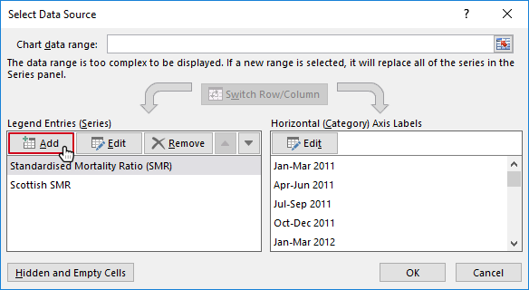
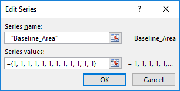
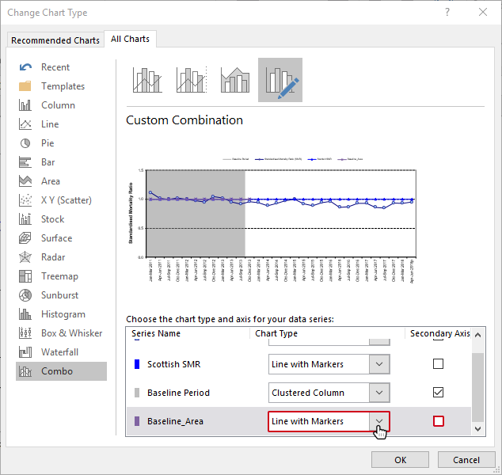
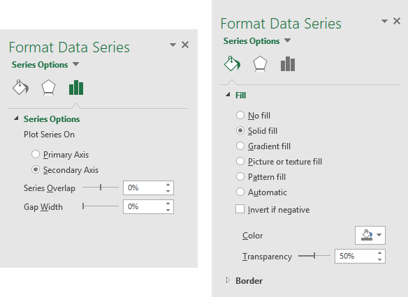
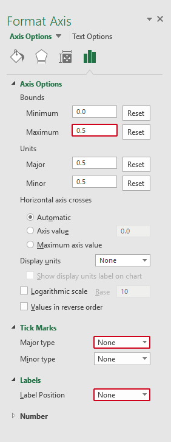
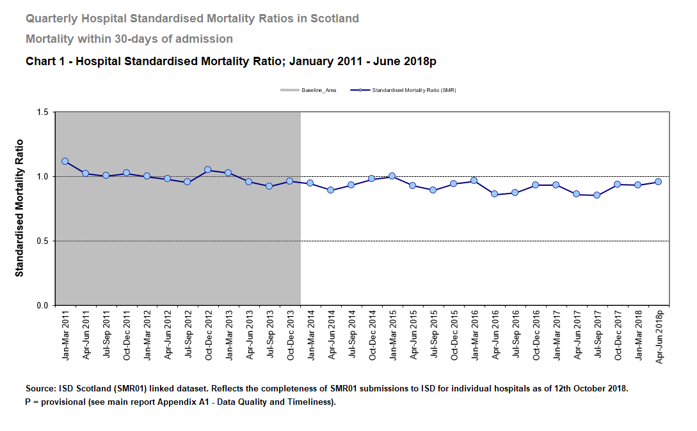

2 Chart Baseline
Task: to add a constant baseline area to a chart in Excel.
Steps
- Insert a new data series in the table.
- Set the series values to be a positive value
pfor all quarters whch are in the baseline period and set them to0for quarters which aren’t in the baseline period. - Set the chart type of this data series to ‘Column’.
- Plot this series on the “secondary axis”.
- Change the gap width of the columns to
0. - Set the maximum value of the secondary axis to a value less than
p. - Remove any visible parts of the secondary axis.
- Set the transparency of the columns to 50% (to allow lines to be visible that are behind the columns) and choose an appropriate colour.
Details
In this worked example we are using TableA1b_Automated, with sheets Table1 and Chart1. Our data includes a baseline period that we need to show on our chart. We do this by adding another data series within the same chart.
- First, right-click on the chart and click “Select Data…”, on the screen that appears click “Add” for a new series.

- Name the new series, in this example we’ve named it “Baseline_Area”. You’ll also need to know how many data points (e.g. number of quarters) that are in the baseline period. The series values will then be any number repeated the number of times there are data points. In this example, we have 12 quarters that are part of our baseline, we have chosen the number “1”, and filled in “1” 12 times.

- Now, back at the chart, right-click on any of the new data points and select “Change Series Chart Type”. From the available chart types, go to “Column” and select “Clustered Column”. Depending on the version of Excel, you may also be able to select “Secondary Axis” too (there’s another way in the next step).

The chart will now have bars across the baseline period, we’re getting there. To have them fill the space, right-click on one of the bars and select “Format Data Series…”. In the menu that appears there’s a couple of things to do:
- In “Series Options”, change the Gap Width to 0%.
- If you weren’t able to change the Baseline to a secondary axis in the previous step, you can do that here too. Under “Plot Series On”, click “Secondary Axis”.
- You can also change the colour under “Fill”. Choose a suitable solid fill and change the transparency to 50% (this is so it doesn’t obscure the data points that will be in the baseline period).

The area is now nearly covered but doesn’t go right to the top, there’s also a secondary axis that we need to get rid of. Go to the secondary axis (right-hand side) and right-click to select “Format Axis”. In this menu:
- Change the “Maximum Bound” to a number less than the value used in step 2. In this example we used 1 so we’ll make the maximum 0.5.
- Change the “Major type” tick marks to be “None”. This will remove the marks on the axis that represent the value points.
- Finally, change the “Axis Labels” or “Label Position” (depending on your version of Excel) to “None”. This will remove any words from the axis.

That’s the baseline period added to the chart and will adapt with any data changes. The output from this example looks like this:
